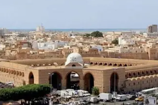
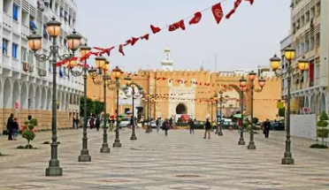
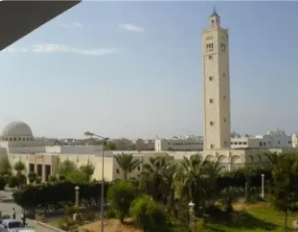
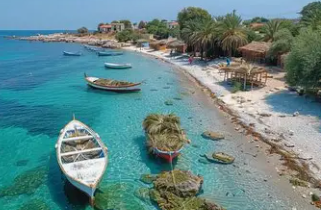
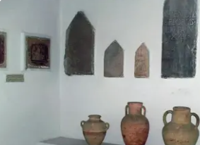

Capitale Économique du Sud

Sfax est un gouvernorat situé sur la côte est de la Tunisie, dans la région du Sahel. C'est la deuxième ville du pays et son principal pôle économique, industriel et commercial après Tunis.
La ville de Sfax, chef-lieu du gouvernorat, est un grand port méditerranéen dynamique, centre d'affaires prospère et ville laborieuse réputée pour l'esprit entrepreneurial de ses habitants.
Le gouvernorat se distingue par son dynamisme économique exceptionnel, sa médina fortifiée remarquablement préservée, ses îles Kerkennah paradisiaques, son industrie de l'huile d'olive et de la pêche, et son architecture arabo-andalouse unique.
Deuxième pôle économique de Tunisie. Industries diversifiées, port commercial majeur, zone industrielle importante. Esprit d'entreprise et réussite commerciale légendaires.
Premier producteur et exportateur d'huile d'olive de Tunisie. Vastes oliveraies, huileries modernes et traditionnelles. Huile d'olive extra vierge de renommée internationale.
Archipel paradisiaque de plages désertes et eaux turquoise. Pêche traditionnelle aux charfias (nasses fixes), palmeraies, calme absolu. Authenticité et nature préservée.
Médina entourée de remparts du IXe siècle parfaitement conservés. Architecture arabo-andalouse élégante, souks animés, Grande Mosquée majestueuse. Inscrite au patrimoine national.

Médina fortifiée du IXe siècle entourée de remparts crénelés et de bastions. Porte Bab Diwan monumentale, souks traditionnels couverts, architecture arabo-andalouse raffinée. Considérée comme l'une des médinas les mieux préservées de Tunisie avec ses ruelles authentiques.

Mosquée aghlabide fondée en 849, l'une des plus anciennes de Tunisie. Architecture sobre et majestueuse avec minaret carré. Cour intérieure entourée d'arcades, salle de prière aux colonnes antiques. Monument emblématique de la ville.

Archipel de deux îles principales reliées par une chaussée romaine. Plages de sable blanc immaculées, eaux peu profondes cristallines, palmeraies verdoyantes. Pêche traditionnelle aux charfias, architecture insulaire authentique. Havre de paix et de tranquillité.

Installé dans l'ancien hôtel de ville (1902), le musée abrite une riche collection de mosaïques romaines exceptionnelles provenant de sites comme Thaenae. Vestiges puniques, romains et byzantins. Architecture coloniale élégante de style néo-mauresque.